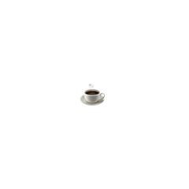

주요 관광지
-
인사동
인사동은 도심 속에서 낡지만 귀중한 전통의 물건들이 교류되는 소중한 공간이다. 인사동에는 큰 대로를 중심으로 사이사이 골목들이 얽혀 있다. 각 골목에는 화랑, 전통공예점, 고미술점, 전통찻집, 전통음식점, 카페 등이 밀집되어 있다.
-
창덕궁
창덕궁은 조선 왕조의 도성인 한양 북쪽에 위치한 이궁이었다. 태종 때 지어진 창덕궁은 자연과의 조화가 잘 어우러진 아름다운 궁궐로, 1997년에 유네스코 세계 문화유산으로 지정되었다.
입장료 | 3000원 (65세 이상, 24세 이하 무료)
-

전쟁기념관
서울의 중심, 용산에 위치한 전쟁기념관은 전쟁을 단일 주제로, 5천년 민족사를 조망한 대한민국 유일의 전쟁사 종합박물관이다.
-
하늘공원
하늘공원은 2002년 제17회 월드컵축구대회를 기념하며 난지도 쓰레기매립장을 복원하기 위해 개원한 월드컵경기장 일대 5대 공원 중 하나이다. 전체적인 형태는 정사각형으로 이뤄져 있으며 억새 식재지·순초지·암석원·혼생초지·해바라기 식재지 등 테마별로 구성되어 있다.
맛집 및 카페
-

우래옥
한식
주소 | 서울 중구 창경궁로 62-29 -

청수당
카페
주소 | 서울 종로구 돈화문로11나길 31-9